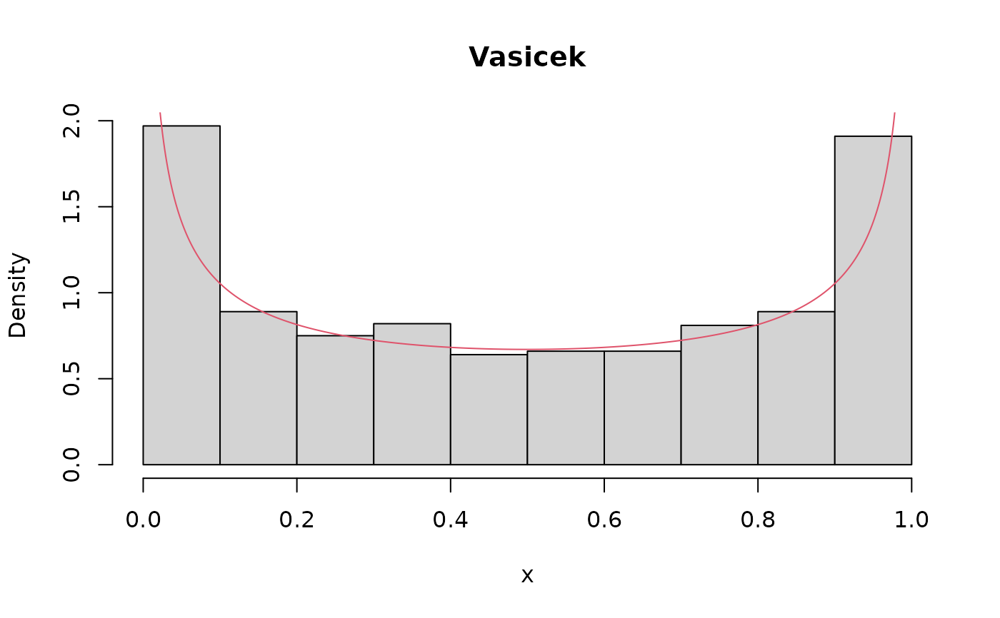
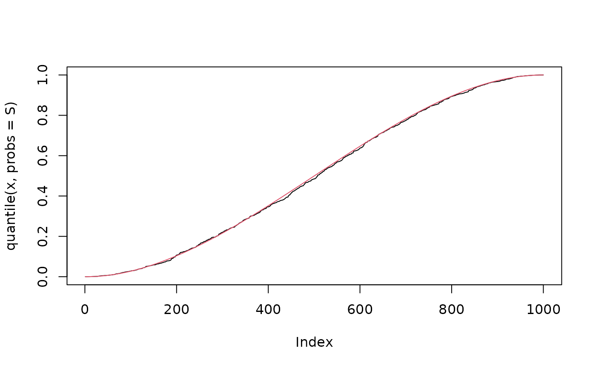

Normal-kernel Vasicek-type distribution with quantile parameterization
NVASIQ.RdThe function NVASIQ() defines the normal-kernel Vasicek-type
distribution as a gamlss.family object. In this parameterization,
\(\mu\) corresponds to the fixed \(\tau\)-th quantile and
\(\sigma\) is a shape parameter. The fixed level is supplied through
the quantile argument. The functions
dNVASIQ, pNVASIQ, qNVASIQ, and rNVASIQ define
the density, distribution function, quantile function, and random
generation for the Vasicek distribution, respectively.
Usage
dNVASIQ(x, mu, sigma, quantile = 0.5, log = FALSE)
pNVASIQ(q, mu, sigma, quantile = 0.5, lower.tail = TRUE, log.p = FALSE)
qNVASIQ(p, mu, sigma, quantile = 0.5, lower.tail = TRUE, log.p = FALSE)
rNVASIQ(n, mu, sigma, quantile = 0.5)
NVASIQ(quantile = 0.5, mu.link = "logit", sigma.link = "logit")Arguments
- x
Vector of quantiles in the interval \((0,1)\).
- mu
Vector of \(\tau\)-th quantile parameter values.
- sigma
Vector of shape parameter values.
- quantile
Fixed quantile level \(\tau\in(0,1)\) used in the distribution functions and in the
NVASIQ()GAMLSS family.- log, log.p
Logical; if
TRUE, probabilities are returned on the log scale.- q
Vector of values in \([0,1]\) at which the cumulative distribution function is evaluated.
- lower.tail
Logical; if
TRUE(default), \(P(X \le x)\) is returned; otherwise, \(P(X > x)\).- p
Vector of probabilities in \([0,1]\) on the probability scale.
- n
Number of observations. If
length(n) > 1, the length is taken to be the number required.- mu.link
Link function for the \(\mu\) parameter.
- sigma.link
Link function for the \(\sigma\) parameter.
Value
NVASIQ() returns a gamlss.family object that can be used
to fit a Vasicek-type distribution using the gamlss
function.
Details
Probability density function: $$f\left(x \mid \mu, \sigma, \tau\right) = \sqrt{\frac{1-\sigma}{\sigma}} \exp\left\{\frac{1}{2}\left[\Phi^{-1}(x)^2 - \left(\frac{\sqrt{1-\sigma}\left(\Phi^{-1}(x)-\Phi^{-1}(\mu)\right) - \sqrt{\sigma}\,\Phi^{-1}(\tau)}{\sqrt{\sigma}}\right)^2\right]\right\}.$$
Cumulative distribution function: $$F\left(x \mid \mu, \sigma, \tau\right) = \Phi\left(\frac{\sqrt{1-\sigma}\left(\Phi^{-1}(x)-\Phi^{-1}(\mu)\right) - \sqrt{\sigma}\,\Phi^{-1}(\tau)}{\sqrt{\sigma}}\right).$$
where \(0<x<1\), \(0<\mu<1\), \(0<\sigma<1\), and \(0<\tau<1\); \(\mu\) is the \(\tau\)-th quantile and \(\sigma\) is the shape parameter.
Note
For NVASIQ(), \(\mu\) corresponds to the \(\tau\)-th quantile
and \(\sigma\) is a shape parameter. The level supplied through
quantile is stored in the family definition and embedded as a
numeric literal in the family components used by GAMLSS; no global
variable is required.
References
Hastie, T. J. and Tibshirani, R. J. (1990). Generalized Additive Models. Chapman and Hall, London.
Mazucheli, J., Alves, B., Korkmaz, M. Ç., and Leiva, V. (2022). Vasicek quantile and mean regression models for bounded data: New formulation, mathematical derivations, and numerical applications. Mathematics, 10, 1389.
Rigby, R. A. and Stasinopoulos, D. M. (2005). Generalized additive models for location, scale and shape (with discussion). Applied Statistics, 54(3), 507–554.
Rigby, R. A., Stasinopoulos, D. M., Heller, G. Z., and De Bastiani, F. (2019). Distributions for Modeling Location, Scale, and Shape: Using GAMLSS in R. Chapman and Hall/CRC.
Stasinopoulos, D. M. and Rigby, R. A. (2007). Generalized additive models for location, scale and shape (GAMLSS) in R. Journal of Statistical Software, 23(7), 1–46.
Stasinopoulos, D. M., Rigby, R. A., Heller, G., Voudouris, V., and De Bastiani, F. (2017). Flexible Regression and Smoothing: Using GAMLSS in R. Chapman and Hall/CRC.
Vasicek, O. A. (1987). Probability of loss on loan portfolio. KMV Corporation.
Vasicek, O. A. (2002). The distribution of loan portfolio value. Risk, 15(12), 160–162.
Examples
set.seed(123)
x <- rNVASIQ(n = 1000, mu = 0.50, sigma = 0.69, quantile = 0.50)
R <- range(x)
S <- seq(from = R[1], to = R[2], length.out = 1000)
hist(x, prob = TRUE, main = "Vasicek")
lines(S, dNVASIQ(x = S, mu = 0.50, sigma = 0.69, quantile = 0.50), col = 2)

plot(ecdf(x))
lines(S, pNVASIQ(q = S, mu = 0.50, sigma = 0.69, quantile = 0.50), col = 2)
 plot(quantile(x, probs = S), type = "l")
lines(qNVASIQ(p = S, mu = 0.50, sigma = 0.69, quantile = 0.50), col = 2)
plot(quantile(x, probs = S), type = "l")
lines(qNVASIQ(p = S, mu = 0.50, sigma = 0.69, quantile = 0.50), col = 2)

library(gamlss)
set.seed(123)
data <- data.frame(
y = rNVASIQ(n = 100, mu = 0.50, sigma = 0.69, quantile = 0.50)
)
fit <- gamlss(y ~ 1, data = data,
family = NVASIQ(quantile = 0.50,
mu.link = "logit",
sigma.link = "logit"))
#> GAMLSS-RS iteration 1: Global Deviance = -35.9846
#> GAMLSS-RS iteration 2: Global Deviance = -35.9846
1 / (1 + exp(-fit$mu.coefficients))
#> (Intercept)
#> 0.4967521
1 / (1 + exp(-fit$sigma.coefficients))
#> (Intercept)
#> 0.6777598
set.seed(123)
n <- 100
x <- rbinom(n, size = 1, prob = 0.5)
eta <- 0.5 + 1 * x
mu <- 1 / (1 + exp(-eta))
sigma <- 0.5
y <- rNVASIQ(n, mu, sigma, quantile = 0.5)
data <- data.frame(y, x)
fit <- gamlss(
y ~ x, data = data, family = NVASIQ(quantile = 0.50)
)
#> GAMLSS-RS iteration 1: Global Deviance = -55.4043
#> GAMLSS-RS iteration 2: Global Deviance = -55.4042
fitquantiles <- lapply(c(0.10, 0.25, 0.50, 0.75, 0.90), function(level) {
gamlss(y ~ x, data = data, family = NVASIQ(quantile = level))
})
#> GAMLSS-RS iteration 1: Global Deviance = -53.4337
#> GAMLSS-RS iteration 2: Global Deviance = -54.9224
#> GAMLSS-RS iteration 3: Global Deviance = -55.2968
#> GAMLSS-RS iteration 4: Global Deviance = -55.3813
#> GAMLSS-RS iteration 5: Global Deviance = -55.3992
#> GAMLSS-RS iteration 6: Global Deviance = -55.4031
#> GAMLSS-RS iteration 7: Global Deviance = -55.404
#> GAMLSS-RS iteration 1: Global Deviance = -54.5352
#> GAMLSS-RS iteration 2: Global Deviance = -55.3657
#> GAMLSS-RS iteration 3: Global Deviance = -55.4029
#> GAMLSS-RS iteration 4: Global Deviance = -55.4042
#> GAMLSS-RS iteration 5: Global Deviance = -55.4042
#> GAMLSS-RS iteration 1: Global Deviance = -55.4043
#> GAMLSS-RS iteration 2: Global Deviance = -55.4042
#> GAMLSS-RS iteration 1: Global Deviance = -54.5314
#> GAMLSS-RS iteration 2: Global Deviance = -55.3641
#> GAMLSS-RS iteration 3: Global Deviance = -55.4025
#> GAMLSS-RS iteration 4: Global Deviance = -55.4041
#> GAMLSS-RS iteration 5: Global Deviance = -55.4042
#> GAMLSS-RS iteration 1: Global Deviance = -53.4294
#> GAMLSS-RS iteration 2: Global Deviance = -54.9158
#> GAMLSS-RS iteration 3: Global Deviance = -55.2943
#> GAMLSS-RS iteration 4: Global Deviance = -55.3801
#> GAMLSS-RS iteration 5: Global Deviance = -55.3985
#> GAMLSS-RS iteration 6: Global Deviance = -55.4029
#> GAMLSS-RS iteration 7: Global Deviance = -55.4038
lapply(fitquantiles, summary)
#> Warning: summary: vcov has failed, option qr is used instead
#> ******************************************************************
#> Family: c("NVASIQ", "Normal-kernel Vasicek-type quantile")
#>
#> Call: gamlss(formula = y ~ x, family = NVASIQ(quantile = level), data = data)
#>
#>
#> Fitting method: RS()
#>
#> ------------------------------------------------------------------
#> Mu link function: logit
#> Mu Coefficients:
#> Estimate Std. Error t value Pr(>|t|)
#> (Intercept) -1.1440 0.2009 -5.696 1.29e-07 ***
#> x 0.8954 0.2849 3.143 0.00221 **
#> ---
#> Signif. codes: 0 ‘***’ 0.001 ‘**’ 0.01 ‘*’ 0.05 ‘.’ 0.1 ‘ ’ 1
#>
#> ------------------------------------------------------------------
#> Sigma link function: logit
#> Sigma Coefficients:
#> Estimate Std. Error t value Pr(>|t|)
#> (Intercept) -0.2913 0.1031 -2.825 0.00572 **
#> ---
#> Signif. codes: 0 ‘***’ 0.001 ‘**’ 0.01 ‘*’ 0.05 ‘.’ 0.1 ‘ ’ 1
#>
#> ------------------------------------------------------------------
#> No. of observations in the fit: 100
#> Degrees of Freedom for the fit: 3
#> Residual Deg. of Freedom: 97
#> at cycle: 7
#>
#> Global Deviance: -55.404
#> AIC: -49.404
#> SBC: -41.58849
#> ******************************************************************
#> Warning: summary: vcov has failed, option qr is used instead
#> ******************************************************************
#> Family: c("NVASIQ", "Normal-kernel Vasicek-type quantile")
#>
#> Call: gamlss(formula = y ~ x, family = NVASIQ(quantile = level), data = data)
#>
#>
#> Fitting method: RS()
#>
#> ------------------------------------------------------------------
#> Mu link function: logit
#> Mu Coefficients:
#> Estimate Std. Error t value Pr(>|t|)
#> (Intercept) -0.2799 0.1902 -1.472 0.14431
#> x 0.8746 0.2795 3.129 0.00231 **
#> ---
#> Signif. codes: 0 ‘***’ 0.001 ‘**’ 0.01 ‘*’ 0.05 ‘.’ 0.1 ‘ ’ 1
#>
#> ------------------------------------------------------------------
#> Sigma link function: logit
#> Sigma Coefficients:
#> Estimate Std. Error t value Pr(>|t|)
#> (Intercept) -0.2928 0.1256 -2.33 0.0218 *
#> ---
#> Signif. codes: 0 ‘***’ 0.001 ‘**’ 0.01 ‘*’ 0.05 ‘.’ 0.1 ‘ ’ 1
#>
#> ------------------------------------------------------------------
#> No. of observations in the fit: 100
#> Degrees of Freedom for the fit: 3
#> Residual Deg. of Freedom: 97
#> at cycle: 5
#>
#> Global Deviance: -55.40425
#> AIC: -49.40425
#> SBC: -41.58874
#> ******************************************************************
#> Warning: summary: vcov has failed, option qr is used instead
#> ******************************************************************
#> Family: c("NVASIQ", "Normal-kernel Vasicek-type quantile")
#>
#> Call: gamlss(formula = y ~ x, family = NVASIQ(quantile = level), data = data)
#>
#>
#> Fitting method: RS()
#>
#> ------------------------------------------------------------------
#> Mu link function: logit
#> Mu Coefficients:
#> Estimate Std. Error t value Pr(>|t|)
#> (Intercept) 0.6554 0.1936 3.385 0.00103 **
#> x 0.9284 0.2922 3.178 0.00198 **
#> ---
#> Signif. codes: 0 ‘***’ 0.001 ‘**’ 0.01 ‘*’ 0.05 ‘.’ 0.1 ‘ ’ 1
#>
#> ------------------------------------------------------------------
#> Sigma link function: logit
#> Sigma Coefficients:
#> Estimate Std. Error t value Pr(>|t|)
#> (Intercept) -0.2929 0.1396 -2.098 0.0384 *
#> ---
#> Signif. codes: 0 ‘***’ 0.001 ‘**’ 0.01 ‘*’ 0.05 ‘.’ 0.1 ‘ ’ 1
#>
#> ------------------------------------------------------------------
#> No. of observations in the fit: 100
#> Degrees of Freedom for the fit: 3
#> Residual Deg. of Freedom: 97
#> at cycle: 2
#>
#> Global Deviance: -55.40423
#> AIC: -49.40423
#> SBC: -41.58872
#> ******************************************************************
#> Warning: summary: vcov has failed, option qr is used instead
#> ******************************************************************
#> Family: c("NVASIQ", "Normal-kernel Vasicek-type quantile")
#>
#> Call: gamlss(formula = y ~ x, family = NVASIQ(quantile = level), data = data)
#>
#>
#> Fitting method: RS()
#>
#> ------------------------------------------------------------------
#> Mu link function: logit
#> Mu Coefficients:
#> Estimate Std. Error t value Pr(>|t|)
#> (Intercept) 1.6511 0.2082 7.932 3.54e-12 ***
#> x 1.0614 0.3175 3.343 0.00117 **
#> ---
#> Signif. codes: 0 ‘***’ 0.001 ‘**’ 0.01 ‘*’ 0.05 ‘.’ 0.1 ‘ ’ 1
#>
#> ------------------------------------------------------------------
#> Sigma link function: logit
#> Sigma Coefficients:
#> Estimate Std. Error t value Pr(>|t|)
#> (Intercept) -0.2926 0.1260 -2.322 0.0223 *
#> ---
#> Signif. codes: 0 ‘***’ 0.001 ‘**’ 0.01 ‘*’ 0.05 ‘.’ 0.1 ‘ ’ 1
#>
#> ------------------------------------------------------------------
#> No. of observations in the fit: 100
#> Degrees of Freedom for the fit: 3
#> Residual Deg. of Freedom: 97
#> at cycle: 5
#>
#> Global Deviance: -55.40422
#> AIC: -49.40422
#> SBC: -41.58871
#> ******************************************************************
#> Warning: summary: vcov has failed, option qr is used instead
#> ******************************************************************
#> Family: c("NVASIQ", "Normal-kernel Vasicek-type quantile")
#>
#> Call: gamlss(formula = y ~ x, family = NVASIQ(quantile = level), data = data)
#>
#>
#> Fitting method: RS()
#>
#> ------------------------------------------------------------------
#> Mu link function: logit
#> Mu Coefficients:
#> Estimate Std. Error t value Pr(>|t|)
#> (Intercept) 2.6720 0.2273 11.754 < 2e-16 ***
#> x 1.2421 0.3504 3.545 0.000604 ***
#> ---
#> Signif. codes: 0 ‘***’ 0.001 ‘**’ 0.01 ‘*’ 0.05 ‘.’ 0.1 ‘ ’ 1
#>
#> ------------------------------------------------------------------
#> Sigma link function: logit
#> Sigma Coefficients:
#> Estimate Std. Error t value Pr(>|t|)
#> (Intercept) -0.2908 0.1040 -2.798 0.00618 **
#> ---
#> Signif. codes: 0 ‘***’ 0.001 ‘**’ 0.01 ‘*’ 0.05 ‘.’ 0.1 ‘ ’ 1
#>
#> ------------------------------------------------------------------
#> No. of observations in the fit: 100
#> Degrees of Freedom for the fit: 3
#> Residual Deg. of Freedom: 97
#> at cycle: 7
#>
#> Global Deviance: -55.40379
#> AIC: -49.40379
#> SBC: -41.58828
#> ******************************************************************
#> [[1]]
#> Estimate Std. Error t value Pr(>|t|)
#> (Intercept) -1.1439644 0.2008508 -5.695593 1.288551e-07
#> x 0.8953719 0.2848844 3.142931 2.213147e-03
#> (Intercept) -0.2913352 0.1031299 -2.824935 5.719860e-03
#>
#> [[2]]
#> Estimate Std. Error t value Pr(>|t|)
#> (Intercept) -0.2798791 0.1901741 -1.471700 0.144306042
#> x 0.8746436 0.2795444 3.128818 0.002311963
#> (Intercept) -0.2927525 0.1256391 -2.330107 0.021830569
#>
#> [[3]]
#> Estimate Std. Error t value Pr(>|t|)
#> (Intercept) 0.6553778 0.1936273 3.384739 0.001025921
#> x 0.9284338 0.2921506 3.177929 0.001984805
#> (Intercept) -0.2928562 0.1395562 -2.098481 0.038407803
#>
#> [[4]]
#> Estimate Std. Error t value Pr(>|t|)
#> (Intercept) 1.6510553 0.2081503 7.932036 3.541345e-12
#> x 1.0613601 0.3174911 3.342960 1.174862e-03
#> (Intercept) -0.2926236 0.1259989 -2.322431 2.225749e-02
#>
#> [[5]]
#> Estimate Std. Error t value Pr(>|t|)
#> (Intercept) 2.6719902 0.2273284 11.753879 2.005138e-20
#> x 1.2421167 0.3504167 3.544684 6.043298e-04
#> (Intercept) -0.2908391 0.1039514 -2.797836 6.183260e-03
#>